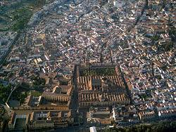

Casco Histórico de Córdoba
El centro histórico de Córdoba es uno de los cascos antiguos más grandes de Europa. En 1984, la Unesco declaró a la mezquita-catedral de Córdoba como Patrimonio de la Humanidad.1 Más tarde, en 1994, la Unesco expandió esta denominación a gran parte del casco antiguo.2 El centro histórico posee una gran riqueza monumental conservando grandes vestigios de la época romana, árabe y cristiana.3
Los elementos de borde que definen la delimitación del conjunto histórico de Córdoba están formados por las vías de comunicación que coinciden con la antigua muralla, lo que en gran medida ha salvaguardado el centro histórico de los ensanches urbanísticos de finales del siglo XIX y principios del XX, pues éstos transcurren por el perímetro del mismo (avenida Conde Vallellano, Paseo de la Victoria, Ronda de los Tejares, avenida de las Ollerías), creándose así un anillo de espacios libres que protege al Conjunto Histórico de Córdoba.